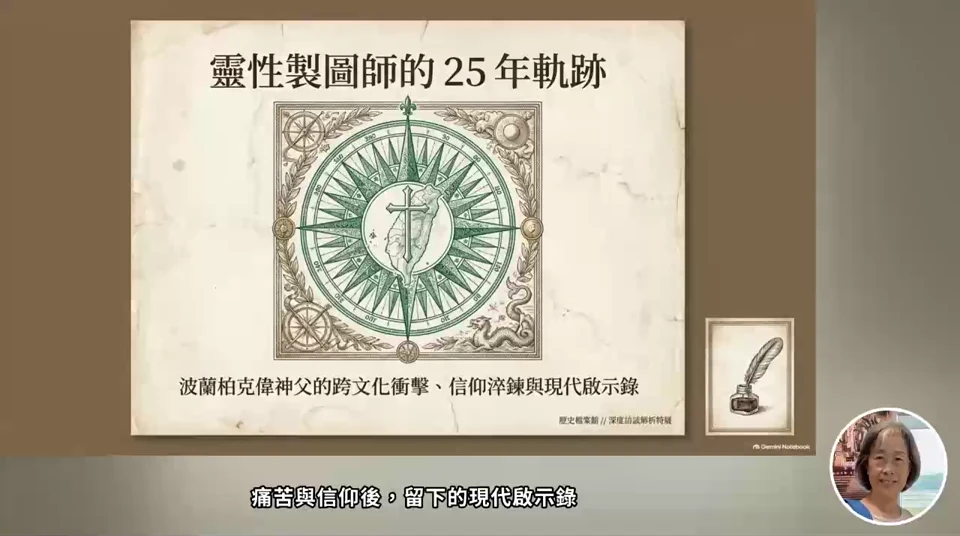

彼此相顧 激發愛心
從聖三堂到德華女子公寓，讀一段 1960 年代女工避風港的故事。
走訪大坪林聖三堂與 1968 年落成的全臺首座職業婦女宿舍「德華女子公寓」，並收錄影片《靈性製圖師的25年軌跡》。
-

靈性製圖師的25年軌跡
一位波蘭神父在台灣走過二十五年。跟著影片，一起回望他在這片土地上的生命足跡。
-
德華女子公寓
1960 年代，許多年輕女工離鄉來到新店。萬德華神父在寶斗厝籌建德華女子公寓，讓她們在工廠以外有個可以安頓的地方。
-

在歲月裂縫中種植光明：從聖三堂到德華女子公寓
寶安街一帶曾流過瑠公圳，附近的聖三堂與德華女子公寓，則留下新店工業年代的另一段故事。這篇從地方口述與舊址出發，回看離鄉女工如何在這裡找到住處。